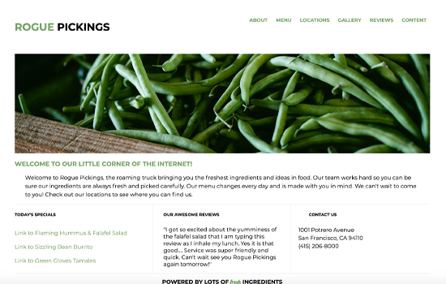

my portfolio

Rogue Pickings Website
HTML & CSS from Photoshop Design Comp
This is one of the pages I coded by hand using a Photoshop design comp as reference. The links were set up for additional webpages, and I used CSS to link fonts and create the layout. Practice makes perfect.
Jubilee Austen Project
HTML5 & CSS Website
This was the first project I created by hand using CSS and HTML5 following a practice design comp. I took my practice one step further and started replacing the fictional information with my own information as well as original photos and graphics. Combining my extensive knowledge of design including programs like Adobe CC has helped me immensely.
Recipe Collection
HTML5 & CSS Exercise
This recipe collection webpage was very challenging in regards to layout, but practicing this has encouraged me to set up my own page with drink recipes. More on that to come!